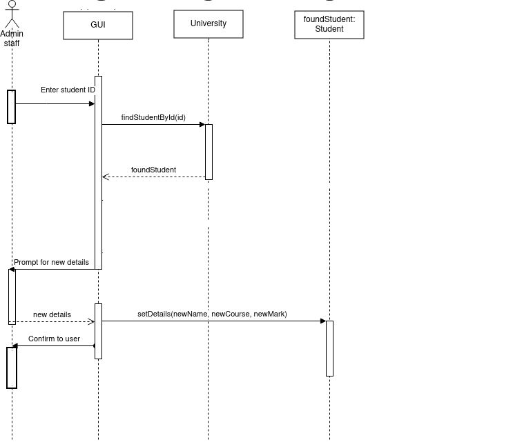

Sequence diagrams
Having linked the use-cases to the domain model classes with design-level use case texts, the next stage is to move to a more detailed design, in which we work out what methods might need to be implemented, which classes they belong to and what order each method should be called. The sequence diagram allows us to do this: sequence diagrams show all the components in the system and their interactions (in the form of method calls), focusing on the order (sequence) in which they are called. Once a sequence diagram is completed, the methods shown on it can be used to enhance or correct the class diagram, to produce a finalised, accurate class diagram from which coding can begin.
What we have to do
Our aim is to convert the design-level use case text into the sequence diagram. We will go through the process by looking at our first design-level use case text from the previous topic (Enrol a Student) as an example:
| Step | Actor action | System response |
|---|---|---|
| 1 | The use case begins when the admin staff selects to enrol a new student. | - |
| 2 | - | The UI prompts the user for the student details (name, address, date of birth, course) |
| 3 | The user enters the details specified in step 2. | - |
| 4 | - | The UI checks the validity of the details, e.g. date of birth is sensible |
| 5 | - | The University object allocates a student ID for new student using the existing highest ID plus one. |
| 6 | - | The University object creates a Student object and adds it to the list of students. |
| 7 | - | System confirms enrolment is successful on the UI. |
First - work out what methods are needed
Before we draw the sequence diagram, it helps to clearly identify the methods which will be needed to implement the use case. We can do this by analysing our design-level sequence diagram still further.
Here is an example of how to do this from the "enrol a student" design-level use case text shown above. As we saw above, the most interesting steps are step 5 and 6 because they involve objects of the domain model classes University and Student. We can think about these steps in a bit more detail in order to work out what methods might be needed.
- We first need to allocate a student ID, using the existing highest ID plus one. As we have seen, this is the responsibility of the
University. So it follows logically that we could allocate a method -allocateStudentId()- for this functionality, and place it in theUniversityclass. - We then need to create a student object using that ID, and add it to the list of students. Again, it follows logically that we need a new method,
addNewStudent(), also insideUniversity. - So we end up with two methods of
Universityto implement this use case. These will be shown as messages on the sequence diagram.
Secondly - draw the sequence diagram
We then draw the sequence diagram by going through the use case and showing the interactions between the components of the system, including the actor, UI and domain model classes. Two components interact if they communicate with each other. What do we mean when we say components communicate with each other?
- An actor communicates with the UI by pressing buttons, filling in text fields, and so on.
- The UI communicates with an actor by displaying information.
- A class communicates with another class by calling a method of the other class. In response, the other class might return data.
Sequence diagram notation
- Sequence diagrams show the communication between the components of the system in the correct sequence (hence the name)
- Each component (actor, class) is shown as a vertical lifeline representing the time span in which it is active
- For example, in the sequence diagram below there are lifelines for "admin staff" (actor),
GUI,UniversityandStudent
- For example, in the sequence diagram below there are lifelines for "admin staff" (actor),
- When a component communicates with another, we say that the component (actor, UI or class) sends the other component a message
- These are shown as solid arrows
- In code, this translates to class A calling a method of class B
- The arrow shows the direction of the message
- Sometimes one class sends itself a message (a self-call) - for example
checkDetails()on the sequence diagram below - Return values (return messages) are shown by a dotted line

Overall, the sequence diagram shows how the control flows from one component to another (e.g. actor to UI, UI to class, or class to another class). A given component is in control when a method of that component is running (or, in the case of an actor, the actor is interacting with the UI). A vertical box on a given lifeline is known as an activation and represents a continuous period of control in one component, for example, a method.
Full explanation of sequence diagram for Enrol Student
- The control starts with the admin staff, when they choose to add a new student (step 1).
- The control then shifts to the UI, which prompts the user to enter the student details (step 2).
- The control then shifts back to the admin staff, who enters the student details (step 3).
- The control then shifts back to the UI, which receives the student details and validates them (step 4). Validation does not require the use of domain model classes, so we write it as a self-call (see above): the UI can do it with its own method, which might be called
validateDetails(). - The student then needs to be created, which the UI cannot do on its own. It needs to call upon the domain model classes to do this. This corresponds to the UI calling methods of the domain model classes. In our initial analysis, above, we worked out the two methods we need, both in the
Universityclass:allocateStudentId()to allocate a student ID, andaddNewStudent()to add a student. - So the flow of control transfers to the
Universityfor step 5, to allocate a new student ID. This involves the UI calling theallocateStudentId()method of theUniversitywhich then returns an ID. - The step to return the ID is clearly shown in the sequence diagram. It is shown as a return message (dotted line, going the other way)
- We then need to create a new student and add it to the list: as we saw above, this is done with the
addNewStudent()method. This method will perform both tasks. It will need the student ID allocated in the previous step, so we pass it in as a parameter. - Finally the UI displays a confirmation message (e.g. a dialog box). This is represented by a message sent back to the admin staff, so the flow of control is transferred back to the admin staff (who can then continue to use the application).
Example 2 - Edit student details
We will now go through the second use case in a similar way. Firstly, here is the design-level use case text from the previous topic:
| Step | Actor action | System response |
|---|---|---|
| 1 | The use case begins when the admin staff selects to edit the student details | - |
| 2 | - | The UI prompts the user for the student ID |
| 3 | The member of staff enters the student ID. | - |
| 4 | - | The University object finds the Student object with that ID |
| 5 | - | The UI displays details of that student in editable text boxes |
| 6 | The admin staff changes the details. | - |
| 7 | - | The UI checks that the new details are valid (e.g. no blank strings) |
| 8 | - | The Student object we found in step 4 is updated with the new details. |
| 9 | - | The UI displays a confirmation message to the user. |
University finds the Student with that ID. Hopefully, it's fairly clear what method would be needed here. We'd need a method within University to loop through the list of students, and return the Student with the correct ID. So we could define a method called findStudentById() which takes a student ID as a parameter and returns a Student.
Step 8 in this use case is even more straightforward, we just need to update the details of the found Student. We could define a method of Student which takes the new details as parameters and updates the properties to those new values. This method could simply be called updateDetails().
So we could have a sequence diagram like this:

- In step 1 the control is with the admin staff: the admin staff selects the option to edit the student details.
- The flow of control then shifts to the UI in step 2: the UI displays a form to allow the admin staff to enter the student ID.
- The flow of control then shifts back to the admin staff in step 3, and they enter an ID.
- The flow of control shifts back to the UI (the admin staff can only interact with the UI!) in step 4, but the UI then immediately transfers control to the
Universityto find the student with that ID, using thefindStudentById()method we discussed above. - The
Universityreturns theStudentto the UI by means of a return message, the flow of control returns to the UI, and the UI displays the student details in editable text boxes (step 5). - The flow of control then shifts back to the admin staff, who changes the appropriate details, in step 6.
- The flow of control then shifts to the UI once again in step 7, which validates the details the user entered.
- In step 8, the flow of control shifts to the
Studentthat we found in step 4. The UI sends the new details to theStudentobject, which updates its details to the new ones entered by the admin staff. - The flow of control returns to the UI in step 9, which displays a confirmation message in a dialog box, which is displayed to the admin staff, with the flow of control finishing with the admin staff so that they can then dismiss the dialog box.
Alternative courses of action on a sequence diagram
You can also show alternative courses of action on a sequence diagram. This sis done by means of a UML frame. This has a label (alt for alternative courses of action) together with two or more sections, each representing an alternative course of action, and separated by a dotted line. Each section is annotated with the condition which must hold true for that course of action to run. Here is an example:

Preparing a sequence diagram in diagrams.net
Please see this blog article for more detail on preparing a sequence diagram in diagrams.net.
Exercise
Below is a domain model and two design-level use case texts for the live music venue scenario, introduced in week 4. Using these:
- Work out what methods would be needed to implement the use case, by further analysing the steps in the use-case text which involve the domain model classes as shown above.
- Prepare a sequence diagram for "book an event".
- Work out what methods would be needed to implement this use case, as before.
- Prepare a sequence diagram for "book an event".
Domain model

Design-level use-case texts
Will appear once you have completed the Week 5 work.